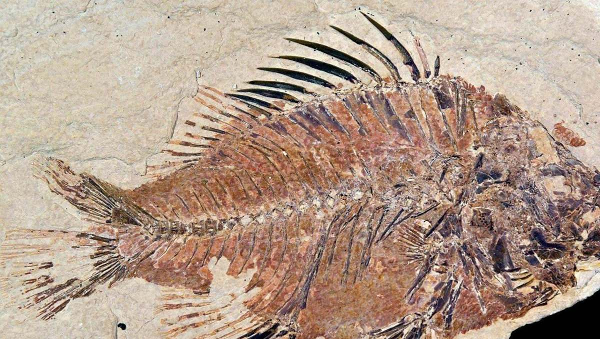

Unit 6 Family Guide: Fossils & Earth History
Opti's Wonder Films · Lessons 17.01 and 17.02 · Week 17

What Can Fossils Tell Us?



The film's big questionIf you found a rock with a fish shape pressed into it, in the middle of dry land, what would that tell you about what that place was like long ago?
What your child learns
- A fossil is what's left of a living thing from long ago, like a bone, shell, leaf or footprint, and it forms when mud buries it and slowly turns to stone.
- A fossil's shape is a clue. A sharp tooth points to a meat eater, and a wide, bumpy tooth points to a plant eater.
- Fossils show what places were like long ago. A sea shell on a mountaintop means the sea once covered that spot.
- In rock layers that haven't been disturbed, the deeper layers are older.
Real specimens they studied
A fossil fish from Wyoming, a megalodon shark tooth, a mastodon tooth, a trilobite, the layers of the Grand Canyon, and limestone with sea fossils at the top of Mount Everest.
Words
- fossil
- evidence
- extinct
- environment
- infer
- organism
Ask at dinner
"If you found a fish fossil in the desert, what would that tell you?" (Listen for: the desert was once covered by water.)
Try at home
Press a leaf, shell or toy animal into play dough, then take it out. Can someone else guess what made the print? That's how fossils work.
Fossil Dig Simulation


The film's big questionImagine you find a fossil nobody has ever seen before. How do you go from a shape in rock to a real scientific explanation?
What your child learns
- An observation is only what you can see. An inference is what you figure out from it. "It has three toes" is an observation. "A dinosaur walked here" is an inference.
- A strong inference names its clues, and two clues that agree are stronger than one.
- The rock around a fossil is evidence too. Footprints last in soft, wet mud, and dark mudstone forms in wet, swampy places.
- Your child digs down through a practice dig site, "Site 7-B," and finds that the same spot was a lake, then a swamp, then shallow water.
Real specimens they studied
A dinosaur track from Connecticut, a fossil fern, fossil fish from Wyoming, small dinosaur footprints, a fossil spiral shell, and stromatolites, mounds that scientists think left some of the oldest fossils on Earth.
Words
- paleontologist
- analyze
- data
- inference
- sediment
- ancient
Ask at dinner
Play "I see, I think." Point at something (muddy shoes, an empty plate). One person says what they see. The next says what they think it means, and why.
Try at home
Fill a clear jar halfway with dirt, add water, close the lid, shake it, and leave it overnight. In the morning, look at the layers. The heavy bits settle first, just like sediment.
🌴 Fossils close to home
Florida is full of fossils. Beaches near Venice, on the Gulf Coast, are famous for fossil shark teeth that wash up in the sand. The Florida Museum of Natural History in Gainesville has fossils of mastodons and other animals that once lived right here.
Photo credits
- Fossil fish (Priscacara): NPS photo, public domain.
- Megalodon tooth: Tomleetaiwan, CC0.
- Grand Canyon: Grand Canyon NPS, public domain.
- Dinosaur track (Eubrontes) and fossil fern (Pecopteris): James St. John, CC BY 2.0.
- Stromatolites in Shark Bay: Paul Harrison, CC BY-SA 3.0.
- Opti the owl: Optima Academy.